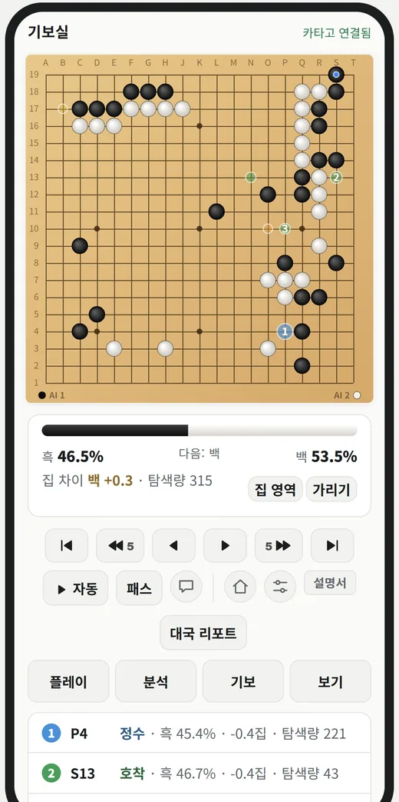
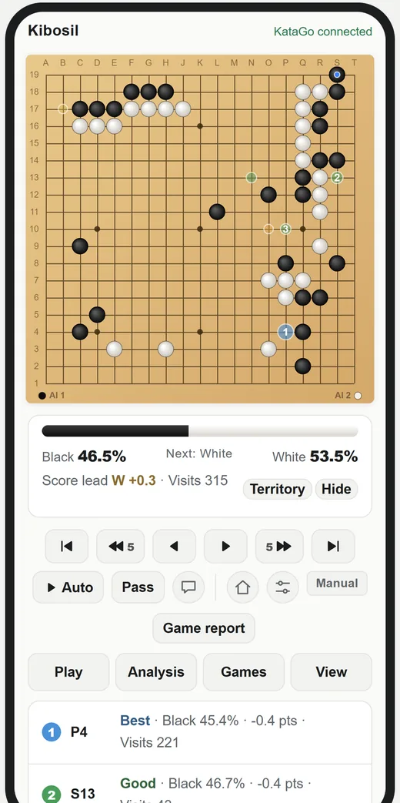

기보실
바둑 AI 카타고(KataGo)로 내 바둑을 돌아보고 훈련하는 앱
모든 기능이 무료이고, 로그인은 고르는 것입니다. 화면 맨 아래에 배너 광고가 하나 있습니다(PC 프로그램에는 광고가 없습니다).
안드로이드 폰 · 윈도우 PC
Kibosil
A Go (Baduk) study app that uses the KataGo AI to review your games and train
Every feature is free, and signing in is optional. One banner ad shows at the bottom of the screen (the PC program has no ads).
Android phones · Windows PCs


할 수 있는 것
기보 분석
한 판 전체를 분석해 승률·집 그래프와 승부처, 수마다 몇 집 손해였는지 보여 줍니다. SGF와 타이젬(GIB)·와바둑(NGF)·판다넷(UGF) 기보를 그대로 엽니다.
AI와 대국
최강 카타고와 두거나, 급수·단 수준으로 사람처럼 두는 AI와 둡니다. 접바둑, 제한 시간, 이어 두기를 지원합니다.
훈련
응징 훈련 · 예측 훈련 · 오답노트. 틀린 문제는 간격을 두고 판을 돌려 다시 나옵니다. 바둑 캘린더로 그날 한 공부를 봅니다.
대국자 리포트
내 기보를 여러 판 모아, 어떤 국면과 시간대에서 손해가 커지는지와 기풍을 봅니다.
폰만으로, PC와 함께
바둑 AI(약 38MB)를 한 번 받으면 폰에서 카타고가 돕니다. 윈도우 PC에 기보실을 깔고 연결하면 PC의 카타고를 씁니다(같은 와이파이).
계정과 서버 백업
고르는 것입니다. 구글이나 패스키로 로그인하면 기보를 서버에 백업하고 새 폰에서 되살립니다. 로그인하지 않으면 서버로 아무것도 가지 않습니다.
What you can do
Game analysis
Analyze a whole game to see win-rate and score graphs, the turning points, and how many points each move lost. Opens SGF as well as Tygem (GIB), WBaduk (NGF) and Pandanet (UGF) records.
Play against the AI
Play the strongest KataGo, or an AI that plays like a person at a kyu/dan level. Handicap games, time controls and continuing a saved game are supported.
Training
Punish training · Prediction training · Mistake notebook. Problems you missed come back later, rotated on the board. The study calendar shows what you did each day.
Player report
Gather many of your games to see in which positions and time ranges you lose the most, and your playing style.
On your phone, or with a PC
Download the Go AI once (about 38MB) and KataGo runs on your phone. Install Kibosil on a Windows PC and connect to use the PC's KataGo (same Wi-Fi).
Account and server backup
Optional. Sign in with Google or a passkey to back up your games and restore them on a new phone. Without signing in, nothing goes to the server.